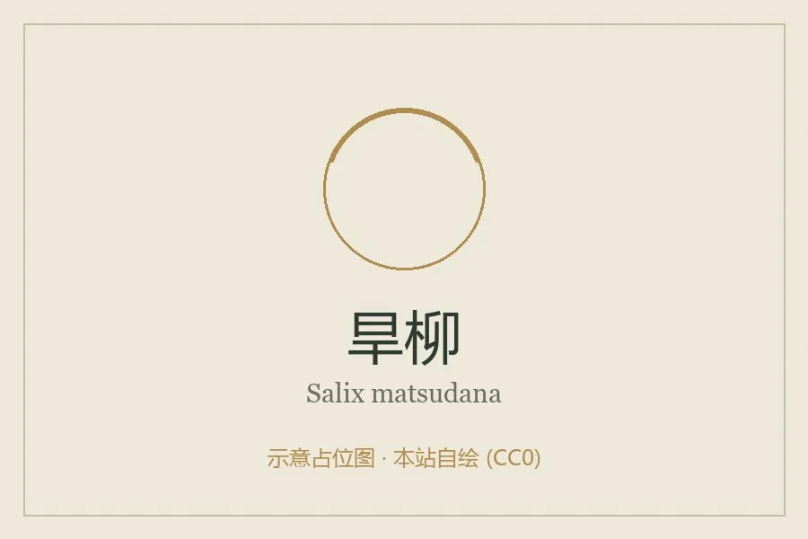

乔木 · 植物界
旱柳 Salix matsudana

中国北方常见的落叶乔木，枝条直立或斜展、耐旱耐寒，是河岸防护与四旁绿化的乡土树种，枝条可编筐。
- 分类
- 门被子植物门纲木兰纲目杨柳目科杨柳科属柳属
- 栖息环境
- 海拔 2000 米以下的河岸、平原与村旁，耐寒耐旱耐水湿
- 地理分布
- 中国东北、华北、西北及华东地区，朝鲜半岛、日本也有分布
- 保护级别
- 暂无评估；中国未列入国家重点保护野生植物名录
物种志
旱柳为落叶乔木，高可达 18 m，树皮灰褐色、纵裂；枝条直立或斜展，小枝淡黄色；叶片披针形，边缘具细锯齿。花期 4 月，葇荑花序与叶同时开放，雄花序黄色，雌花序绿色；蒴果成熟后开裂，种子带白色柳絮。
旱柳分布于中国东北、华北、西北及华东地区，也见于朝鲜半岛、日本，是中国北方河岸、村旁与路旁常见的乡土树种。耐寒、耐旱、耐水湿，根系发达，是护岸固堤与防风固沙的优良树种；木材轻软，可供建筑、家具与造纸用；枝条可编织筐篮，嫩枝叶可作饲料。旱柳与垂柳外形相似，但旱柳枝条直立或斜展、不垂落，可据此区分。
形态与习性
- 株高可达 18 m，枝条直立或斜展
- 花期4 月，与叶同时开放
- 果期4–5 月，蒴果开裂飘絮
- 光照喜光，不耐长期荫蔽
- 水分耐旱也耐水湿
- 主要用途护岸固堤、木材与造纸、枝条编织
趣味知识
- 旱柳的枝条直立或斜展、不垂落，与枝条下垂的垂柳容易区分。
- 旱柳耐寒、耐旱、耐水湿，是北方河岸护堤的常用树种。
- 旱柳的枝条柔韧，可编织筐篮与柳帽。